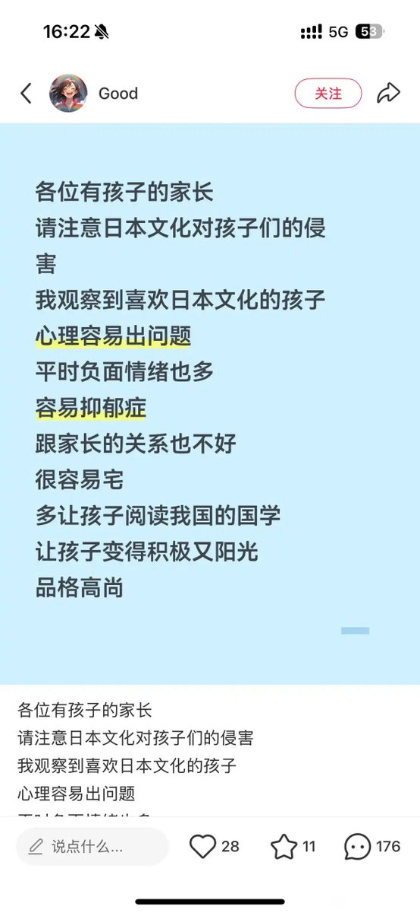
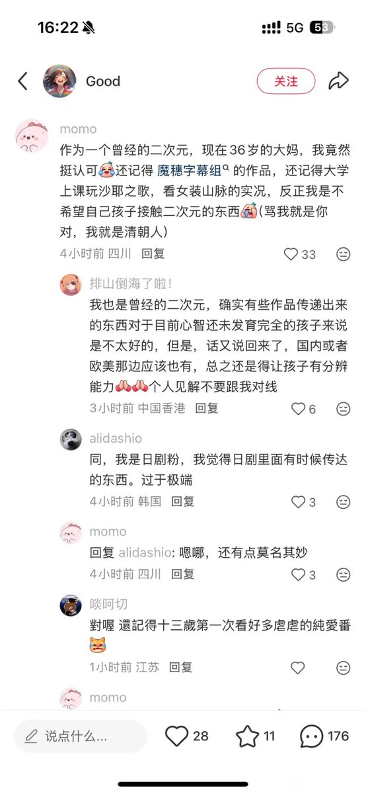

御坂 O.o 雪春📕 (掉fo版)（雪似梅花）
@0502railgun1949
这是颠倒因果关系
因为心理出问题，所以才喜欢二次元
因为现实过得不好
国学那套东西就是自己麻痹自己，孔老二用来约束贵族的东西来约束你自己了
还不如明教呢，明教至少在主张光明终将战胜黑暗，中国那些东西就叫你约束你自己，或者远离世间的嘈杂，自己修炼，其实不都是逃避现实，维护统治阶级利益


利维坦冲浪里
@LVTGW666
老中一谈到教育，张口就是怪各种外物，而对于教育本身，他们基本是能不谈就不谈 https://t.co/j8d4b78Zw0